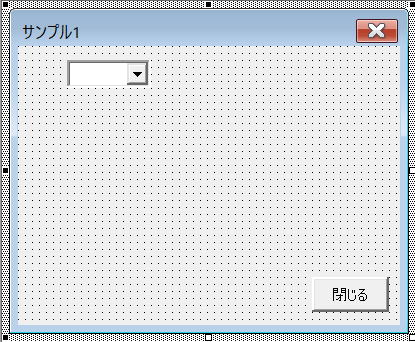

第22回.コントロールの動的作成
ユーザーフォームは、事前に画面デザインを考えて、それにそって部品コントロールを配置するものです。
しかし、ユーザーの操作に応じて、動的に部品コントロールを変更したい場合があります。
・部品コントロールの表示/非表示を切り替える
・動的に部品コントロールを追加/削除する
コントロールの動的作成の動作説明
初期
コンボボックスは1～5が選択できるようにします。
コンボボックスの選択
チェックボックスのチェック
チェックを外すとテキストボックスを消します。
コントロールの表示/非表示を切り替える
・Visibleプロパティの値をTrueで表示/Falseで非表示
・コントロールをフォーム外へ移動することで非表示/所定位置に移動することで表示
以下では、Visibleプロパティの値を変更する方法でのVBAサンプルになります。

コントロールの名称
チェックボックス：chk01～chk05
テキストボックス：txt01～txt05
フォームモジュール
Option Explicit
'初期処理
Private Sub UserForm_Initialize()
With Me.cmb件数
.Style = fmStyleDropDownList
.List = Array(0, 1, 2, 3, 4, 5)
End With
Call ControlsUnVisibleAll
End Sub
'閉じるボタン
Private Sub btClose_Click()
Unload Me
End Sub
'コンボボックスで数値を選択
Private Sub cmb件数_Change()
Dim i As Long
For i = 1 To Me.cmb件数.Value
Me.Controls("chk" & Format(i, "00")).Visible = True
Next
Call ControlsUnVisible(Me.cmb件数.Value)
End Sub
'チェックボックスのチェックを変更
Private Sub chk01_Change()
Me.txt01.Visible = Me.chk01.Value
End Sub
Private Sub chk02_Change()
Me.txt02.Visible = Me.chk02.Value
End Sub
Private Sub chk03_Change()
Me.txt03.Visible = Me.chk03.Value
End Sub
Private Sub chk04_Change()
Me.txt04.Visible = Me.chk04.Value
End Sub
Private Sub chk05_Change()
Me.txt05.Visible = Me.chk05.Value
End Sub
'指定数値以降のチェックボックスとテキストボックスを非表示
Private Sub ControlsUnVisible(Optional ByVal cnt As Long = 0)
Dim i As Long
For i = cnt + 1 To 5
Me.Controls("chk" & Format(i, "00")).Visible = False
Me.Controls("chk" & Format(i, "00")).Value = False
Me.Controls("txt" & Format(i, "00")).Visible = False
Next
End Sub
'全てのチェックボックスとテキストボックスを非表示
Private Sub ControlsUnVisibleAll()
Dim ctl As Control
For Each ctl In Me.Controls
Select Case TypeName(ctl)
Case "CheckBox", "TextBox"
ctl.Visible = False
End Select
Next
End Sub
フォームモジュール名.Show
これだけで良いです。
テストするだけならフォームモジュールでF5でも構いません。
実際に動かしながら、動作と対応するVBAコードを確認してみてください。
動的に部品コントロールを追加/削除する
VBAクラスでWithEventsを使います。

コントロールの名称
クラスモジュール
Option Explicit
'イベントを発生させるクラス（オブジェクト）
Private WithEvents pCheckBox As MSForms.CheckBox
'コントロールの親であるフォーム
Private pForm As MSForms.UserForm
'対応するコントロールを設定するプロパティ
Public Property Set CheckBox(ByVal aCheckBox As MSForms.CheckBox)
Set pCheckBox = aCheckBox
Set pForm = aCheckBox.Parent
End Property
'WithEventsのイベントプロシージャー
Private Sub pCheckBox_Change()
Dim sNum As String
sNum = Right(pCheckBox.Name, 2)
Dim txt As MSForms.TextBox
Set txt = GetTextBox(sNum)
If txt Is Nothing Then
Set txt = pForm.Add("Forms.TextBox.1", "txt" & sNum)
With txt
'以下の数値はサンプル画像で使った数値です
.Top = sNum * 21 + 13
.Left = 30
.Height = 16.8
.Width = 168
End With
End If
txt.Visible = pCheckBox.Value
End Sub
'テキストボックスの存在確認：エラーを使った簡易コードにしています
Private Function GetTextBox(ByVal sNum As String) As MSForms.CheckBox
On Error Resume Next
Set GetTextBox = pForm.Controls("txt" & sNum)
End Function
WithEventsのイベントプロシージャーは、
WithEvents変数名_イベント名
これはVBAの規則となっています。
MSForms.CheckBox
このように、MSFormsのメンバを使わなければなりません。
単にCheckBoxではエラーとなります。
フォームモジュール
Option Explicit
Private clsAry() As clsEvent
'初期処理
Private Sub UserForm_Initialize()
With Me.cmb件数
.List = Array(0, 1, 2, 3, 4, 5)
End With
ReDim clsAry(1 To 5)
End Sub
'閉じるボタン
Private Sub btClose_Click()
Unload Me
End Sub
'コンボボックスで数値を選択
Private Sub cmb件数_Change()
Dim ctl As Control
Dim max As Long
Dim num As Long
max = Me.cmb件数.Value
For Each ctl In Me.Controls
If IsNumeric(Right(ctl.Name, 2)) Then
num = Right(ctl.Name, 2)
If num > max Then
'コントロールの削除
Me.Controls.Remove ctl.Name
End If
End If
Next
'チェックボックスの動的追加
For num = 1 To max
Call AddCheckBox(num)
Next
End Sub
'チェックボックスの動的追加
Private Function AddCheckBox(ByVal num As Long) As MSForms.CheckBox
'チェックボックスの存在確認
Set AddCheckBox = GetCheckBox(num)
If Not AddCheckBox Is Nothing Then Exit Function
'チェックボックスをフォームに追加
Dim sName As String
sName = "chk" & Format(num, "00")
Set AddCheckBox = Me.Controls.Add("Forms.CheckBox.1", sName)
With AddCheckBox
.Top = num * 21 + 13
.Left = 10
.Height = 16.8
.Width = 18
.Caption = ""
End With
'追加したチェックボックスをクラスに設定
Set clsAry(num) = New clsEvent
Set clsAry(num).CheckBox = AddCheckBox
End Function
'チェックボックスの存在確認
Private Function GetCheckBox(ByVal num As Long) As MSForms.TextBox
On Error Resume Next
Set GetCheckBox = Me.Controls("chk" & Format(num, "00"))
End Function
フォームモジュール名.Show
これだけで良いです。
テストするだけならフォームモジュールでF5でも構いません。
実際に動かしながら、動作と対応するVBAコードを確認してみてください。
コントロールの動的作成の最後に
基本的には、「コントロールの表示/非表示を切り替える」こちらの方法が良いでしょう。
画面に収まる範囲内で同時に表示できる数には限度がありますし、最大数は決まっているはずです。
最大数をあらかじめ配置しておき、表示/非表示での切替と位置移動だけで全て対応できます。
とはいえ、コントロールの動的追加はユーザーフォームを扱う上では必要な技術ですので、いざと言う時に使えるように習得しておくと良いでしょう。
同じテーマ「ユーザーフォーム入門」の記事
第17回.Enterキーで次のコントロールに移動する
第18回.２段階のコンボボックス
第19回.数値専用のテキストボックス
第20回.テキストボックスの各種イベント
第21回.ユーザーフォームの各種イベント
第22回.コントロールの動的作成
第23回.イベントプロシージャーの共通化
第24回.イベントプロシージャーの共通化（Enter,Exit）
第25回.簡易音楽プレーヤーの作成
第26回.プログレスバーを自作する
第27回.インクリメンタルサーチの実装
新着記事NEW ・・・新着記事一覧を見る
VBA100本ノック 100本目：WEBから100本ノックのリストを取得｜VBA練習問題（3月3日）
VBA100本ノック 99本目：自動席替え（行列と前後左右が全て違うように）｜VBA練習問題（3月2日）
VBA100本ノック 98本目：席替えルールが守られているか確認｜VBA練習問題（3月1日）
VBA100本ノック 97本目：Accessデータを取得（グループ集計）｜VBA練習問題（2月27日）
VBA100本ノック 96本目：Accessデータを取得（マスタ結合&抽出）｜VBA練習問題（2月26日）
VBA100本ノック 95本目：図形のテキストを検索するフォーム作成｜VBA練習問題（2月24日）
VBA100本ノック 94本目：表範囲からHTMLのtableタグを作成｜VBA練習問題（2月23日）
VBA100本ノック 93本目：複数ブックを連結して再分割｜VBA練習問題（2月22日）
VBA100本ノック 92本目：セルの色を16進で返す関数｜VBA練習問題（2月20日）
VBA100本ノック 91本目：時間計算（残業時間の月間合計）｜VBA練習問題（2月19日）
アクセスランキング ・・・ ランキング一覧を見る
1.最終行の取得（End,Rows.Count）｜VBA入門
2.RangeとCellsの使い方｜VBA入門
3.変数宣言のDimとデータ型｜VBA入門
4.マクロって何？VBAって何？｜VBA入門
5.Range以外の指定方法（Cells,Rows,Columns）｜VBA入門
6.セルのコピー&値の貼り付け（PasteSpecial）｜VBA入門
7.繰り返し処理（For Next)｜VBA入門
8.セルに文字を入れるとは（Range,Value）｜VBA入門
9.マクロはどこに書くの（VBEの起動）｜VBA入門
10.とにかく書いてみよう（Sub,End Sub）｜VBA入門
- ホーム
- マクロVBA応用編
- ユーザーフォーム入門
- コントロールの動的作成
このサイトがお役に立ちましたら「シェア」「Bookmark」をお願いいたします。
記述には細心の注意をしたつもりですが、
間違いやご指摘がありましたら、「お問い合わせ」からお知らせいただけると幸いです。
掲載のVBAコードは動作を保証するものではなく、あくまでVBA学習のサンプルとして掲載しています。
掲載のVBAコードは自己責任でご使用ください。万一データ破損等の損害が発生しても責任は負いません。